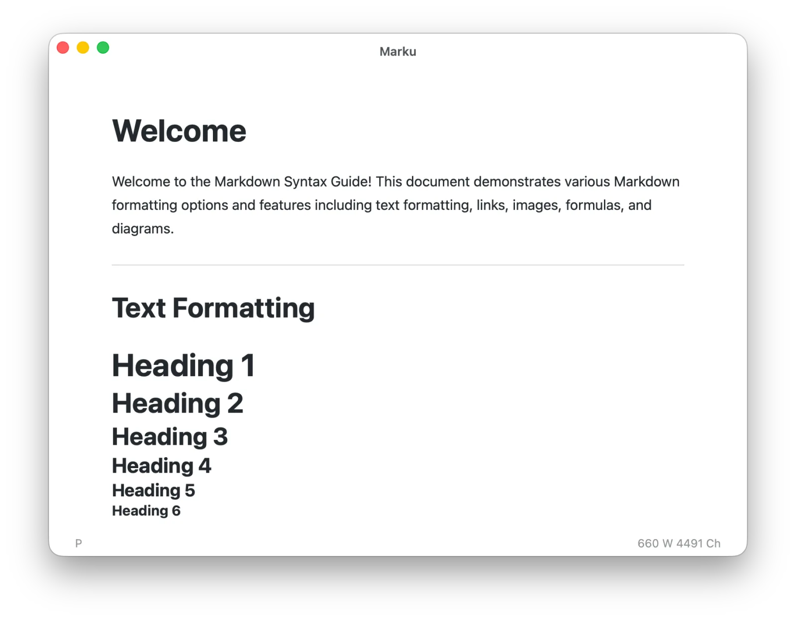
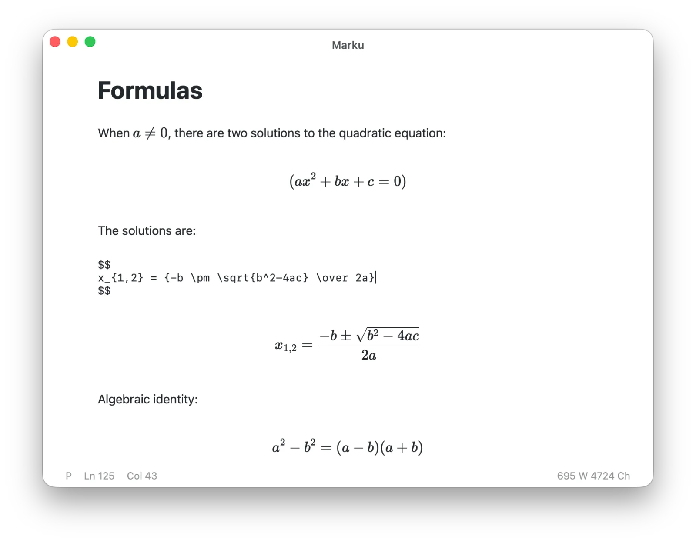
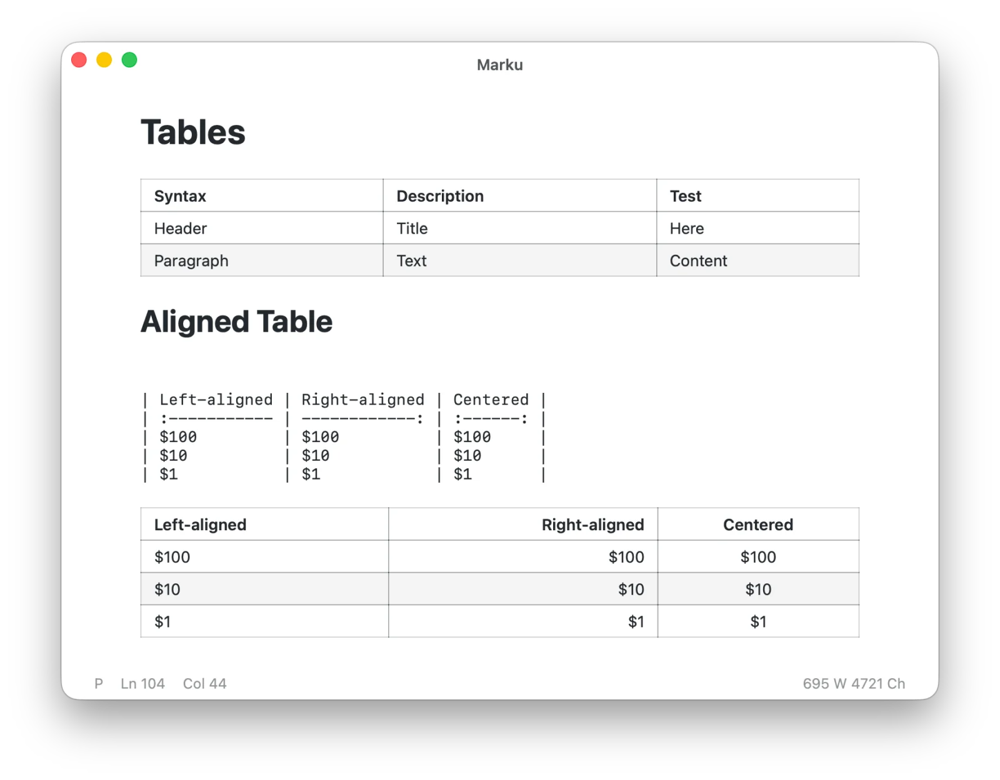
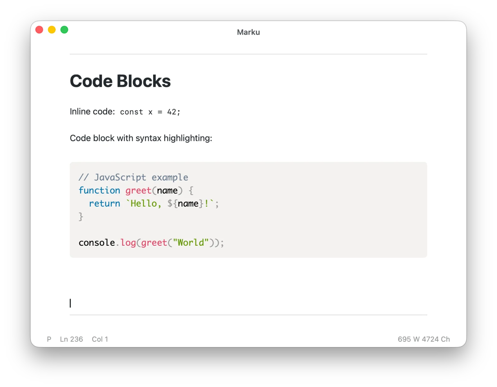
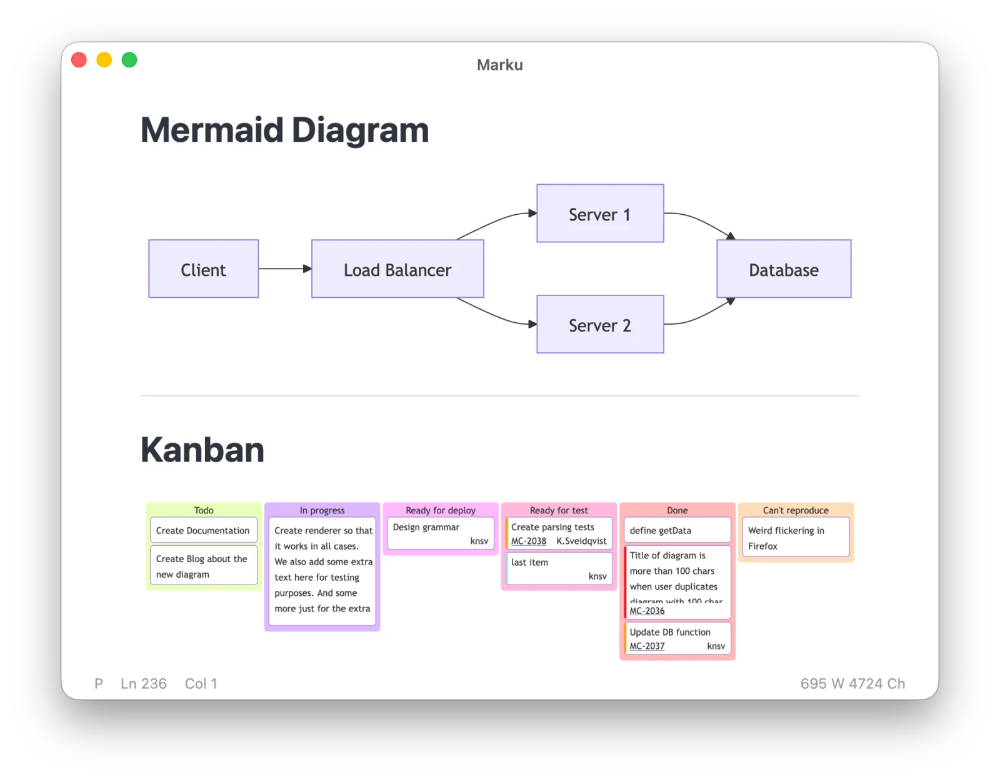
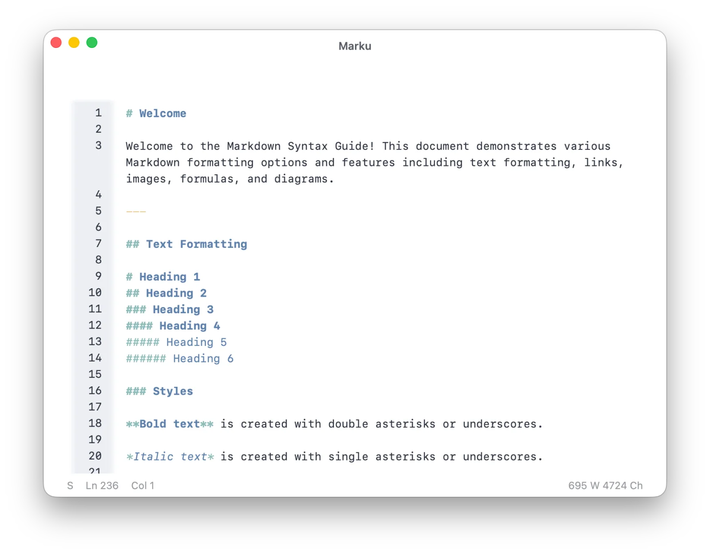
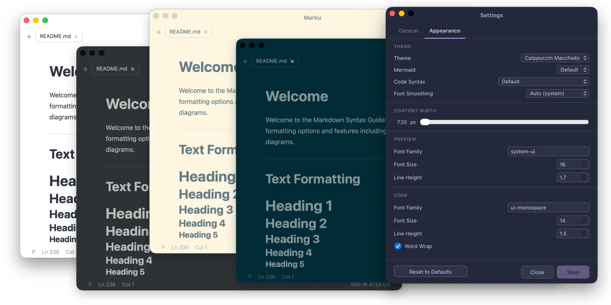

Simple, fast, and lightweight
Write Markdown.
See the result.
Marku combines a focused live preview with a complete source editor. Work with local files, switch views instantly, and keep your writing close to the final result.
- macOS desktop app
- Local files
- Live preview

Everything in one document
Markdown beyond plain text
Preview rich content while you write, or switch to Source View when you want direct control over the document.
01
Math that stays readable
Write inline and display equations with familiar Markdown syntax. Marku renders them with KaTeX directly in the document.
$$ E = mc^2 $$

02
Tables without leaving the page
Create and edit GFM tables, including column alignment, then inspect the rendered result immediately.

03
Code with syntax highlighting
Fenced code blocks support popular languages including Rust, JavaScript, TypeScript, Python, Go, Swift, SQL, and more.

04
Diagrams from text
Describe a flowchart or sequence in a Mermaid code block and see the rendered diagram inside the document.

05
Preview and source, one workflow
Edit rendered blocks for focus or open the complete Markdown source with CodeMirror. Your undo history follows you across both modes.

Make it yours
Thirty themes, one consistent interface
Choose from light and dark themes. The editor, preview, tabs, and surrounding interface adapt together.

Marku for macOS
Your Markdown stays close.
Local files, familiar shortcuts, and a focused editing experience.
Version, download size, and system requirements will be added before release.